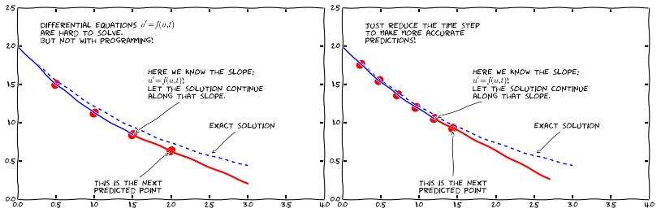
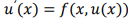
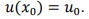
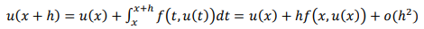
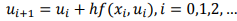
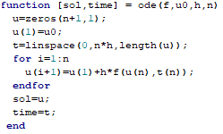
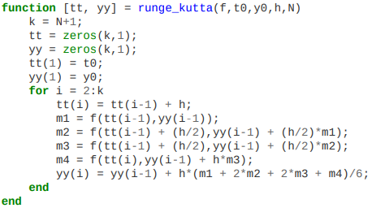
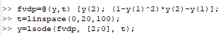

Диференцијални рачун
Увод у обичне диференцијалне једначине

Диференцијалне једначине представљају један од најмоћнијих математичких алата за разумевање и предвиђање понашања динамичких система у природи, инжењерству и друштву. Динамички систем је систем са неким стањем, обично изражен скупом променљивих, који се развија у времену. На пример, осцилирајуће клатно, ширење болести и временски услови су примери динамичких система.
Диференцијална једначина је свака једначина у којој се се јављају независно променљива x, непозната функција f(x) и изводи те функције. Ако непозната функција зависи само од једна променљиве, рећи ћемо да је диференцијална једначина обична. Сем обичних, постоје и парцијалне диференцијалне једначине код којих непозната функција зависи од више независних променљивих.
Кошијев проблем подразумева налажење решење диференцијалне једначине којој су дати почетни услови у некој тачки.
Ојлеров метод за решавање Кошијевог проблема обичне диференцијалне једначине
Ојлеровом методом се одређује приближна вредност Кошијевог проблема у низу еквидистантних тачака. Посматрајмо следећи Кошијев порблем:
 , 
за дату функцију f и почетне вредности x0 и u0. Ојлеровом методом можемо одредити вредности непознате функције f у еквидистантним тачкама x0,..., xn са размаком h. Формула се добија интеграљењем Њутн Лајбницове формуле у границама од xi до xi+1

Ако узмемо да је x=xi и заменимо у једначину изнад добијамо:

где су xi еквидистантни чворови, а ui приближне вредности функције у тим чворовима.
Ову методу бисмо у Octave-u имплементирали на следећи начин:

Резултат се налази у вектору sol и представља вредности непознате функције у n+1 еквидистантних тачака.
Ако нам је циљ да нађемо приближне вредности функције у непосредној околини почетне тачке, ова метода даје задовољавајуће резултате. У том случају, што је мањи корак h наше израчунате вредности ће бити приближније правим вредностима. На слици испод је дат пример одступања резултата методе од правих вредности функције у датим тачкама у случају да је корак 2 (прва слика) и у случају да је корак 0.5 (друга слика).
На сличан начин у Оctave-у можемо имплементирати и методу Рунге Кута.
Решавање обичне диференцијалне jедначине коришћењем уграђене функције lsode
Нека је дат Кошијев порблем следећег облика:
,
Овај проблем се лако може решити у Octave-у коришћењем уграђене функције lsode. Потпис ове функције је следећи
[y, istate, msg] = lsode (fcn, u_0, x),
где је x вектор еквидистантних временских тренутака у којима тражимо решење, u_0 дата вредност функције у тренутку x_0, а fcn функција над којом позивамо методу. Ова функција мора бити облика:
fcn(x,t)=xdot,
где су x и xdot вектори, а t скалар.
Решење се налази у матрици y у којој сваки ред одговара елементу вектора x. Први ред излаза одговара тренутку x_0 па је прва вредност у матрици дато u_0.
Након успешног извршавања, istate ће садржати вредност 2. Ако извршавање није било успешно, istate ће садржати неку вредност различиту од 2 и msg ће садржати додатне информације о грешки која је настала.
Пример коришћења ове функције у Octave:
